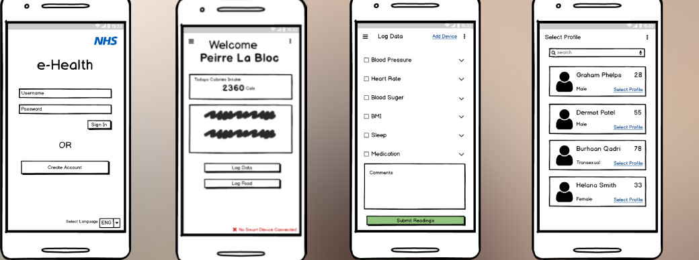
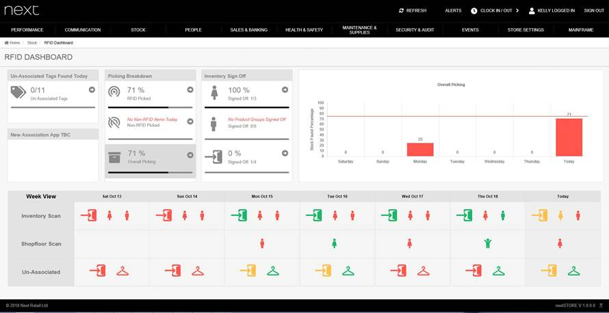

This was the project that I submitted for my final year project. The idea behind this project was to create a facial recognition software for a vehicle to validate a driver. It has features such as facial recognition and location tracking.
I programmed this software using Xamarin for my front end and the backend was programmed in C#. The front-end would talk to the backend via a Restful API. The backend will talk to the external services such as Azure Cognative Services, Firebase, VehicleSmart API (To get any UK registered vehicle details) and Azure SQL cloud database.
The video below shows a small demo of the application
E-Health

The E-Health Application was a mobile application that I needed to create for a project at university. The application allows the user to enter health details and track them. If the user is a patient, then a carer can be assosiated with that patient. The applcation alos connects to a mock smart device to get the users heart rate
The application was created using Xamarin for the front-end and C# for the backend. It uses a microservice architecture to communicate with each other. This means the application has a front-end which talks to a backend. This backend will talk to individual services which I created such as "access service" or "partient service" which in turn will talk to the backend cloud SQL database.
The video below shows a small demo of the application
Direct 2 Desk
The Direct 2 Desk project was my first big project that I did at my placement at NEXT. For this project, I worked with a team of placements, users, architects and the business owner to create a application to make parcel delivery easier. Until this applcation was developed, all the in house orders that staff were ordering was written on paper. Our applcation allowed the user to scan the parcel and use their staff card as a alternative to signatures. The applcation will also store this information in an Azure SQL Database. The user then can access this database using a website that we created. This gives them the option to add new building, print scanned parcels, edit users and query for parcels
This project was developed using a microservice architecture primarly using C# for the services, HTML, CSS for the web proxy and Xamarin for the front end. the backend will communicate using Restful API's. This project was done from scratch therefore, I was able to experience the who development cycle from planning to production
RFID Dashboard

This was my first project that I got when I was in placement. This project required a lot of SQL skills as I needed to collate data from different tables and present the data on my dashboard. This project allowed me to work with RFID for the first time and help me understand how RFID works.